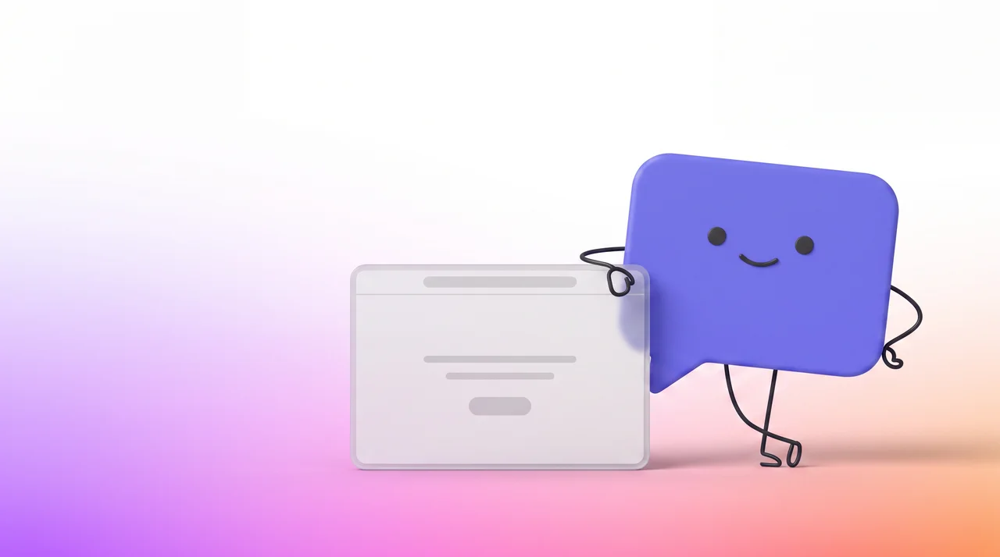

Erstelle deinen eigenen
persönlichen Mitarbeiter.
Er begrüsst deine Besucher, beantwortet ihre Fragen und führt sie zum richtigen Angebot. Rund um die Uhr, auf jeder Unterseite. Er lernt alles selbst von deiner Webseite, du musst nichts vorbereiten.
Keine Kreditkarte nötig.
